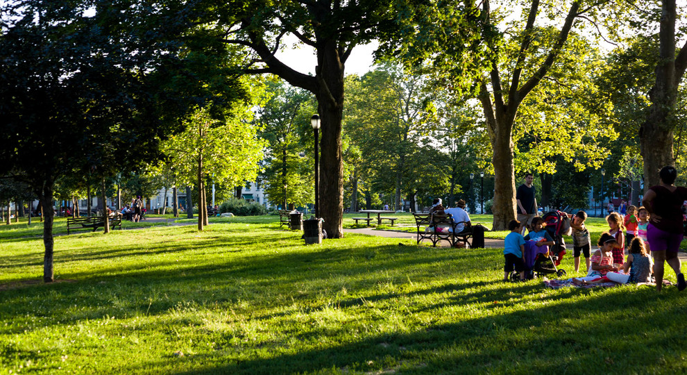

Have you ever thought non-living things staring at you? Well, I thought during my assignment. What if Plants, trees or Lamp posts in park listening to your conversation and staring at you. Noticing all the things you are doing. How would you react to that? Would you like it? Would you still stand under the Lamp post?

So, me with my project partner(Akshay Baweja) went to
Irving Square Park, Bushwick. We chose this location for couple
of reasons:
1. Near by house
2. This park got history
3. Park is nice got lot of unique things like
charging points for e-bikes!

We did a tour of park, and few activities which can help us
making a better interactive product.
Firstly, we did
AEIOU ACTIVITY This activity helps you understand
your location better so that you can make your products
accordingly.
So, after performing these activities, we get an idea of what will we our target audience and which area in park will be better for us.
Observations:
1. People in groups tend to sit on isolated end of the park.2. Most used Entrances/Exits by people
3. Upper end(near water fountain) of the park is more crowded.
The last thing was to think of ideas about the interactive product for which we performed the another activity which was Brainstorming Tree. In this, we jot down all the ideas that came in our mind on Post-its and then rearranging them to get the clear idea. After performing this, we came up with an idea of giving eyes to lamp post which can attract adults, kids and I think dogs too.
Concept Sketch
We’ve planned make eyes for the lamp post so that it can stare/look at the people passing by. Following is a sketch how we planned it’d look like -
Prototyping
So, for the first testing, we made a prototype of eyes moving as you pass by(staring at you) and see how it will look like.It was a success! When we were trying this in park, many people were actually observing and infact kids came running to see what the h**l is going on?